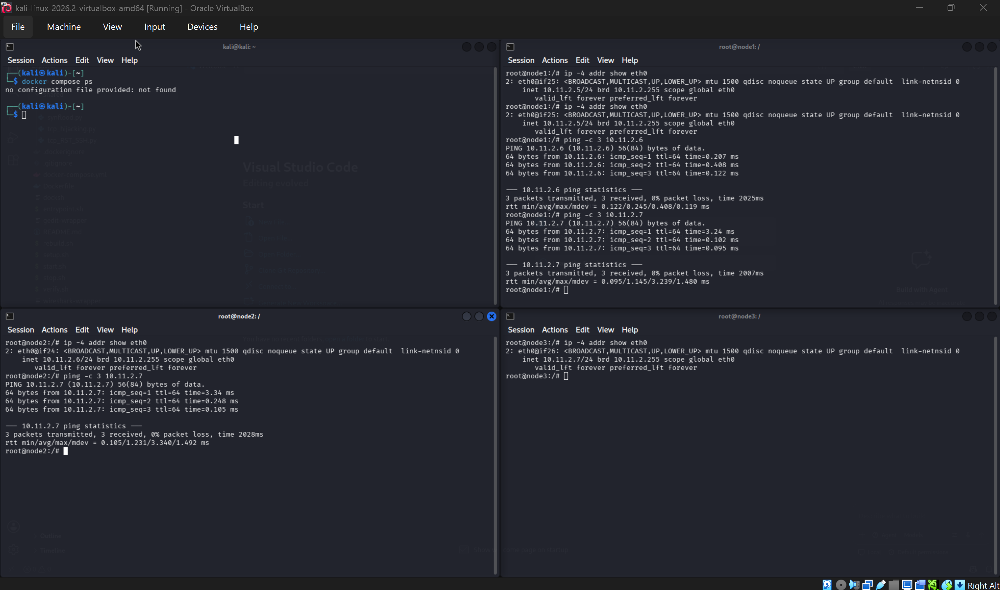
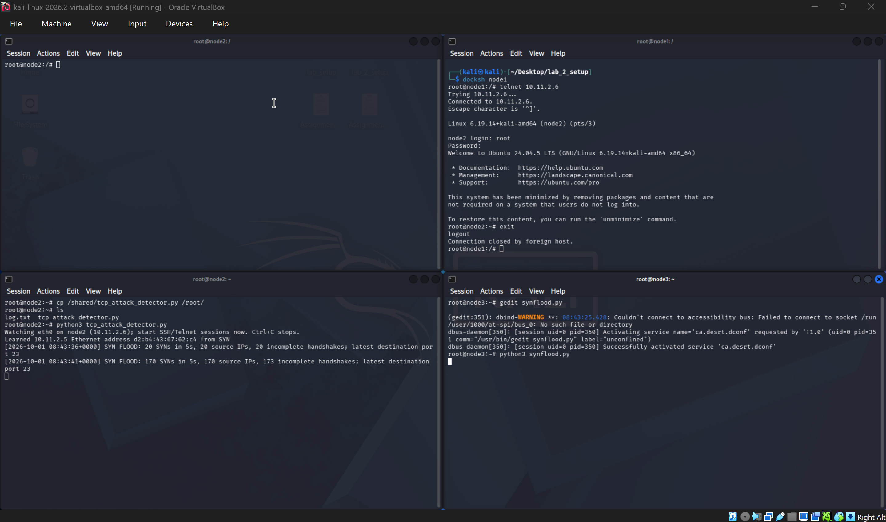
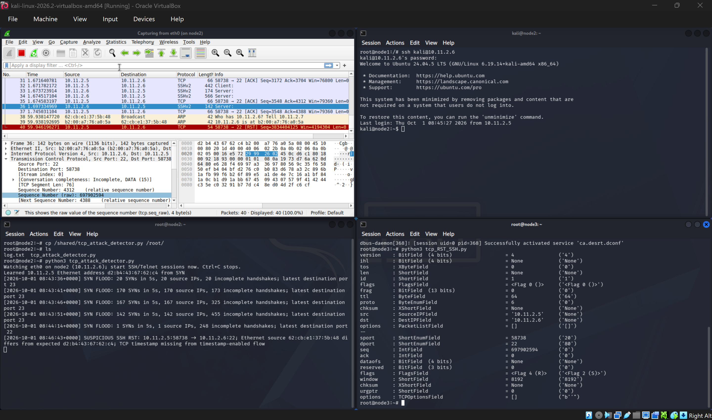

10.11.2.5, node2 server 10.11.2.6, and node3 attacker 10.11.2.7. Wireshark captured node2's eth0. Findings below are limited to the supplied screenshots.The node addresses were checked and node2 exchanged ICMP echo replies with node1 and node3. A live Wireshark capture on node2 showed the traffic. This establishes connectivity and packet visibility for the experiments; the supplied screenshots do not include a docker compose ps listing of all three containers.

| Parameter | Node2 value shown | Why it matters |
|---|---|---|
tcp_max_syn_backlog | 128 | Limits pending connection requests before the handshake completes. |
tcp_syncookies | 0 initially | When enabled, SYN cookies help the server respond under SYN-queue pressure without retaining ordinary pending state for every request. |
tcp_synack_retries | 5 | Controls how many SYN-ACK retries are sent while awaiting the final ACK. |
The Kali host's parameter values are not visible in the supplied screenshots, so a host-versus-container default comparison cannot be verified here.
Node3 sent many SYNs to Telnet port 23 with changing source addresses and without completing the handshake. Node2's SYN-RECV monitor showed 97 pending connections in one capture. A legitimate node1 Telnet attempt retransmitted its SYN four times before receiving a SYN-ACK, then completed login. The attack therefore caused a measurable delay in this run, not a sustained outage. The new packet visible from node1 was a retransmitted SYN.
On node2, net.ipv4.tcp_syncookies was changed from 0 to 1 and read back as 1. During a later flood capture, a new Telnet handshake and login completed, while the half-open count shown was 127. This is consistent with improved availability in the observed run, but the screenshots do not prove SYN cookies were used for a particular handshake or isolate their effect from load variation.

Node1 established SSH to node2. Node3 sent a packet claiming to be from 10.11.2.5:51458 to 10.11.2.6:22 with the RST flag and a sequence number matching the live connection. Wireshark captured the forged RST; the SSH client then reported Broken pipe. A reset can be accepted when its four-tuple and sequence position are valid for the established TCP session.

An attacker restricted to node3 could still spoof an IP packet, but an off-path attacker may not know the live client port and acceptable sequence number. They would need visibility into the session or another way to infer those values. Simply knowing the two IP addresses is insufficient.
With a root Telnet session active between node1 and node2, node3 forged a client-to-server PSH, ACK packet using the observed source port and current raw sequence and acknowledgment numbers. Its 21-byte payload was touch /root/log.txt\r\n. In the capture, node2's acknowledgment advanced from relative 208 to 229; the file then appeared in node2's /root directory. The later retransmissions are consistent with node1 and node2 having different views of the stream after injection.


/root/log.txt after the injection. Open full screenshot.The assignment also asks for a controlled reverse-shell demonstration. No screenshot of a listener or reverse shell is present in the supplied folder, so that outcome is not claimed here.
AI use. The key prompt supplied the Task 5 requirement and asked the AI tool to create a script; a follow-up asked for an end-to-end procedure. The resulting tcp_attack_detector.py was run on node2's eth0. It records packet metadata and alert reasons, not Telnet passwords or full payloads.
| Attack | Detection approach | Observed result |
|---|---|---|
| SYN flood | Count SYNs in a five-second window and track incomplete handshakes. | Alert at 20 SYNs from 20 source IPs, then 170 SYNs from 170 IPs; the pending count later reached 455. |
| SSH RST | Flag an inbound SSH RST, comparing its Ethernet source and negotiated TCP timestamp behavior with the legitimate flow. | SUSPICIOUS SSH RST for node1 port 58738. The observed Ethernet source differed from the learned node1 address; the timestamp was absent. |
| Telnet injection | Check Telnet data packets for identity/timestamp mismatch and the lab's file-creation command marker. | POSSIBLE TELNET INJECTION for port 41914 and a 21-byte payload, with both mismatch reasons and the command marker. |



Assessment. The three exercised behaviors generated the intended real-time alerts. They remain heuristics: a legitimate interface change can alter an Ethernet address, a normal reset can occur, and an authorized Telnet user could type the same command. The command marker applies only to visible plaintext. The SYN counter also aggregates ports, so a high pending count can persist briefly after the flood. Alerts should be checked against connection state and packet captures before treating them as proof of an attack.
Submitted code: synflood.py, tcp_RST_SSH.py, tcp_hijacking.py, and tcp_attack_detector.py. All 37 screenshots remain in the screenshots folder with task-specific names.